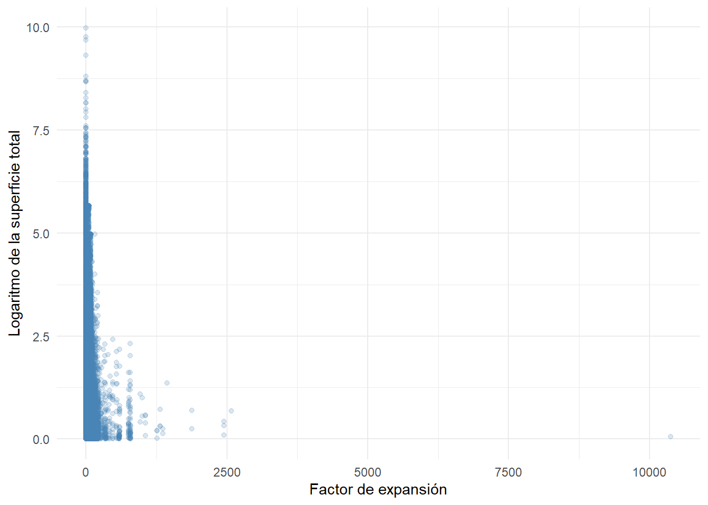
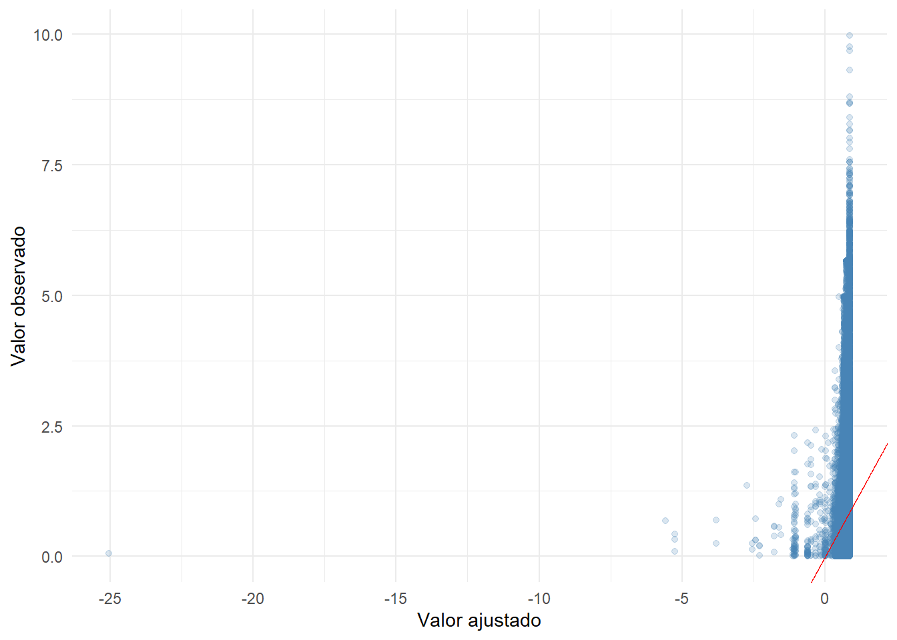
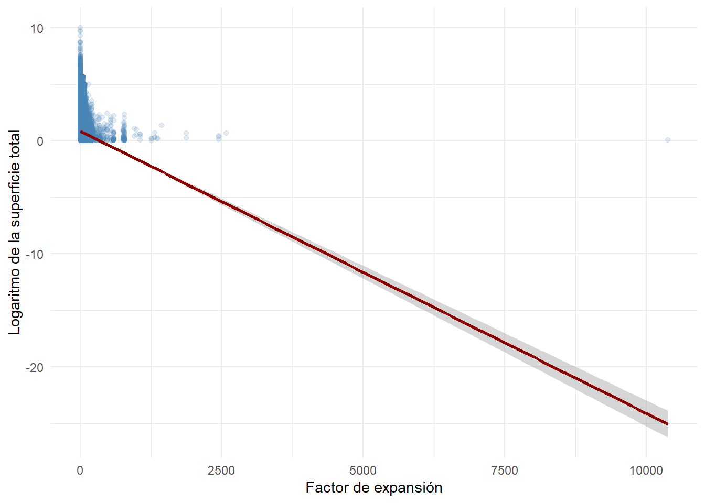
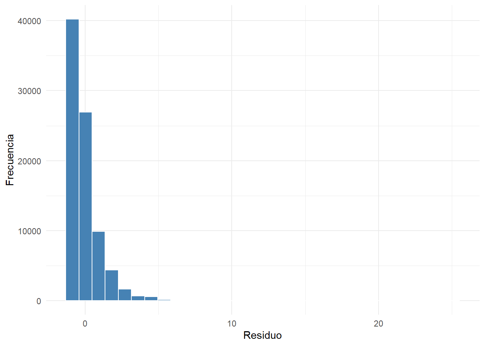
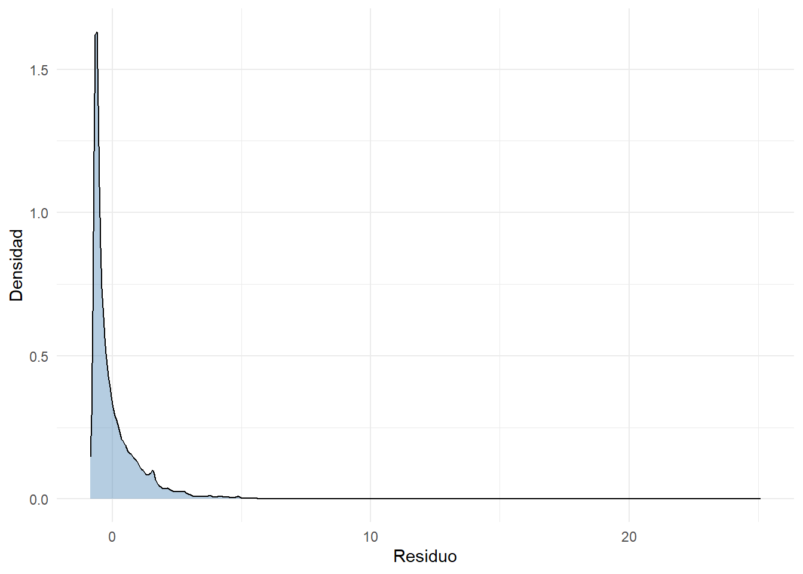
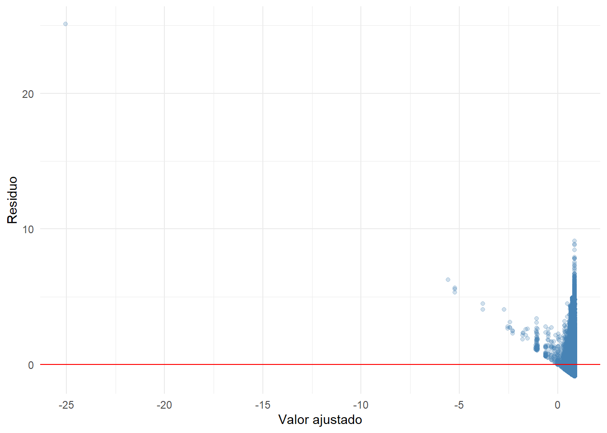
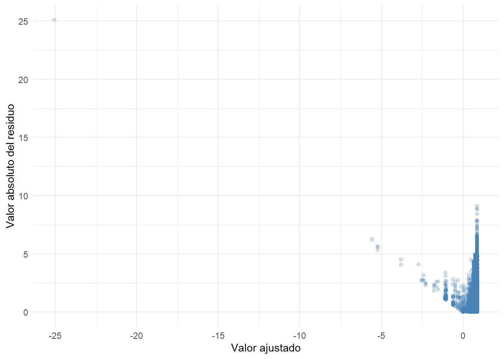
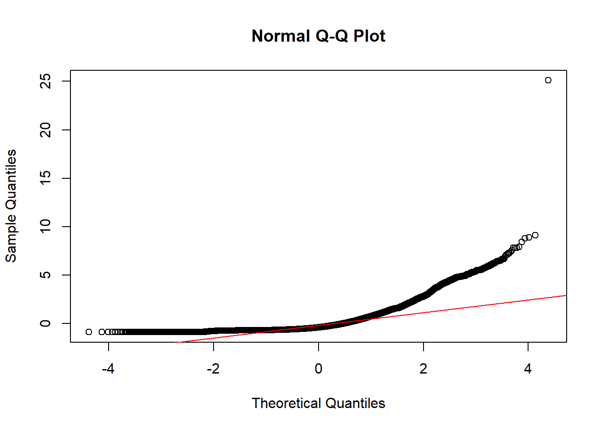

library(tidyverse)
library(ggplot2)
library(broom)
library(knitr)
library(here)23 Regresión lineal simple
Objetivos de aprendizaje
Al finalizar esta sección, el lector será capaz de:
- Comprender el propósito de la regresión lineal simple.
- Diferenciar entre variable dependiente y variable explicativa.
- Estimar un modelo lineal simple utilizando R.
- Interpretar intercepto y pendiente.
- Representar gráficamente la recta de regresión.
- Comprender la lógica básica de predicción lineal.
23.1 Introducción
La correlación permite cuantificar la intensidad de la asociación entre dos variables. Sin embargo, en muchos contextos resulta necesario ir un paso más allá y construir una ecuación que describa formalmente dicha relación.
La regresión lineal simple constituye uno de los modelos estadísticos más utilizados en ciencias sociales, económicas, ambientales y de la salud. Su objetivo es describir cómo cambia una variable de interés cuando otra variable experimenta variaciones (Montgomery et al., 2021).
En este capítulo utilizaremos la Encuesta de Superficie y Producción Agropecuaria Continua (ESPAC) para ilustrar el proceso completo de estimación e interpretación de una regresión lineal simple.
23.2 Cargando librerías
23.3 Cargando la base analítica
base_analitica <- readRDS(
here(
"datos",
"procesado",
"ESPAC_2025",
"sunac_transformado.rds"
)
)23.4 Preparación de variables
base_regresion <- base_analitica |>
mutate(
log_supertotal =
log1p(
supertotal
)
) |>
select(
log_supertotal,
fact_exp_fin
)23.5 ¿Qué es una regresión lineal simple?
La regresión lineal simple modela la relación entre una variable dependiente y una única variable explicativa.
La forma general del modelo es:
\[Y_i = \beta_0 + \beta_1 X_i + \varepsilon_i\]
donde:
- \(Y_i\) es la variable dependiente para la observación \(i\).
- \(X_i\) es la variable explicativa para la observación \(i\).
- \(\beta_0\) es el intercepto de la recta de regresión.
- \(\beta_1\) es la pendiente, que indica el cambio esperado en \(Y\) por cada incremento unitario en \(X\).
- \(\varepsilon_i\) representa el error aleatorio para la observación \(i\).
23.6 Variables del modelo
En este capítulo utilizaremos:
Variable dependiente:
log_supertotalVariable explicativa:
fact_exp_fin23.7 Exploración visual inicial
Antes de estimar cualquier modelo conviene observar los datos.
ggplot(
base_regresion,
aes(
x = fact_exp_fin,
y = log_supertotal
)
) +
geom_point(
alpha = 0.20,
color = "steelblue"
) +
theme_minimal() +
labs(
x = "Factor de expansión",
y = "Logaritmo de la superficie total"
)
Interpretación
El gráfico permite visualizar la relación observada entre ambas variables. La dispersión sugiere la existencia de una tendencia general que puede modelarse mediante una recta de regresión.
23.8 Estimación del modelo
La función lm() permite estimar modelos lineales.
modelo_simple <- lm(
log_supertotal ~ fact_exp_fin,
data = base_regresion
)23.9 Resumen del modelo
summary(
modelo_simple
)
Call:
lm(formula = log_supertotal ~ fact_exp_fin, data = base_regresion)
Residuals:
Min 1Q Median 3Q Max
-0.8692 -0.6251 -0.3859 0.2601 25.0964
Coefficients:
Estimate Std. Error t value Pr(>|t|)
(Intercept) 8.735e-01 4.982e-03 175.32 <2e-16 ***
fact_exp_fin -2.497e-03 5.847e-05 -42.71 <2e-16 ***
---
Signif. codes: 0 '***' 0.001 '**' 0.01 '*' 0.05 '.' 0.1 ' ' 1
Residual standard error: 0.9651 on 84536 degrees of freedom
Multiple R-squared: 0.02112, Adjusted R-squared: 0.02111
F-statistic: 1824 on 1 and 84536 DF, p-value: < 2.2e-16Interpretación
El resumen contiene la información principal del modelo:
- Coeficientes estimados.
- Errores estándar.
- Estadísticos t.
- Valores p.
- Coeficiente de determinación.
Cada uno de estos elementos será interpretado en las siguientes secciones.
23.10 Extracción de coeficientes
broom::tidy(
modelo_simple
) |>
kable(
digits = 4,
caption = "Coeficientes estimados del modelo"
)| term | estimate | std.error | statistic | p.value |
|---|---|---|---|---|
| (Intercept) | 0.8735 | 5e-03 | 175.3194 | 0 |
| fact_exp_fin | -0.0025 | 1e-04 | -42.7090 | 0 |
Interpretación
La tabla resume los parámetros estimados de la ecuación de regresión.
23.11 Interpretación del intercepto
El intercepto representa el valor esperado de la variable dependiente cuando la variable explicativa toma el valor cero. Antes de emitir una interpretación, se debe verificar que el valor p sea menor que 0,05. Una vez comprobada la significancia estadística, se concluye que, cuando el factor de expansión es igual a cero, la superficie total transformada toma el valor estimado por el intercepto.
En términos prácticos:
Valor esperado de log_supertotal
cuando fact_exp_fin = 0Su interpretación debe evaluarse siempre dentro del contexto de los datos observados.
23.12 Interpretación de la pendiente
La pendiente representa el cambio promedio esperado en la variable dependiente ante un incremento de una unidad en la variable explicativa.
En nuestro caso:
Cambio esperado en log_supertotal
cuando fact_exp_fin aumenta una unidad.La pendiente constituye el parámetro más importante de la regresión lineal simple. En este caso, una vez comprobada su significancia estadística, puede interpretarse que, cuando el factor de expansión aumenta en una unidad, la superficie total transformada cambia en la magnitud indicada por el coeficiente estimado.
23.13 Incorporando la recta de regresión
ggplot(
base_regresion,
aes(
x = fact_exp_fin,
y = log_supertotal
)
) +
geom_point(
alpha = 0.20,
color = "steelblue"
) +
geom_smooth(
method = "lm",
color = "darkred",
se = TRUE
) +
theme_minimal() +
labs(
x = "Factor de expansión",
y = "Logaritmo de la superficie total"
)Interpretación
La línea representa la relación promedio estimada por el modelo. La banda sombreada corresponde al intervalo de confianza de la recta estimada.
23.14 Valores ajustados
Una vez estimado el modelo podemos obtener valores predichos.
base_regresion <-
base_regresion |>
mutate(
valor_ajustado =
predict(
modelo_simple
)
)23.15 Primer vistazo a las predicciones
base_regresion |>
slice_head(
n = 10
) |>
kable(
digits = 3,
caption = "Primeras observaciones con valores ajustados"
)| log_supertotal | fact_exp_fin | valor_ajustado |
|---|---|---|
| 1.325 | 66.37 | 0.708 |
| 0.564 | 66.37 | 0.708 |
| 1.824 | 66.37 | 0.708 |
| 0.252 | 66.37 | 0.708 |
| 1.274 | 66.37 | 0.708 |
| 0.598 | 66.37 | 0.708 |
| 1.464 | 66.37 | 0.708 |
| 1.188 | 66.37 | 0.708 |
| 0.167 | 66.37 | 0.708 |
| 0.089 | 66.37 | 0.708 |
Interpretación
Los valores ajustados representan la respuesta estimada por el modelo para cada observación.
23.16 Conclusión práctica
La regresión lineal simple permite construir una ecuación que resume la relación promedio entre dos variables. En esta primera parte aprendimos a:
- Definir variables dependiente y explicativa.
- Estimar un modelo lineal simple.
- Interpretar intercepto y pendiente.
- Representar gráficamente la recta de regresión.
- Obtener predicciones iniciales.
En la siguiente sección estudiaremos cómo evaluar la calidad del ajuste mediante el coeficiente de determinación, intervalos de confianza y medidas básicas de desempeño.
23.17 Evaluar representación de datos
Una vez estimada la ecuación de regresión, el siguiente paso consiste en evaluar qué tan bien representa los datos observados.
La pregunta fundamental es:
¿Qué tan útil es el modelo para describir la relación entre las variables?Para responderla utilizaremos:
- Coeficiente de determinación (R²).
- R² ajustado.
- Error estándar residual.
- Intervalos de confianza.
- Predicciones puntuales.
- Intervalos de predicción.
Estas herramientas permiten evaluar la capacidad explicativa y predictiva del modelo (Montgomery et al., 2021).
23.18 Cargando librerías
library(tidyverse)
library(ggplot2)
library(broom)
library(knitr)
library(here)23.19 Cargando la base analítica
base_analitica <- readRDS(
here(
"datos",
"procesado",
"ESPAC_2025",
"sunac_transformado.rds"
)
)23.20 Preparación de variables
base_regresion <- base_analitica |>
mutate(
log_supertotal =
log1p(
supertotal
)
) |>
select(
log_supertotal,
fact_exp_fin
)23.21 Reestimando el modelo
modelo_simple <- lm(
log_supertotal ~ fact_exp_fin,
data = base_regresion
)23.22 Bondad de ajuste
La bondad de ajuste indica qué tan bien el modelo reproduce el comportamiento observado en los datos.
Una de las medidas más utilizadas es el coeficiente de determinación.
23.23 Coeficiente de determinación R²
El coeficiente de determinación mide la proporción de variabilidad de la variable dependiente explicada por el modelo.
Su valor oscila entre:
0 y 1Formalmente:
\[R^2 = 1 - \frac{\sum_{i=1}^{n}(y_i - \hat{y}_i)^2}{\sum_{i=1}^{n}(y_i - \bar{y})^2}\]
resumen_modelo <- summary(
modelo_simple
)
tibble(
Indicador = "R²",
Valor = resumen_modelo$r.squared
) |>
kable(
digits = 4,
caption = "Coeficiente de determinación"
)| Indicador | Valor |
|---|---|
| R² | 0.0211 |
Interpretación
El R² indica qué proporción de la variabilidad observada en log_supertotal es explicada por fact_exp_fin.
23.24 R² ajustado
Cuando se trabaja con varios predictores suele utilizarse el R² ajustado. Aunque nuestro modelo contiene una sola variable explicativa, conviene familiarizarse con este indicador porque será ampliamente utilizado en los capítulos siguientes.
tibble(
Indicador = c(
"R²",
"R² ajustado"
),
Valor = c(
resumen_modelo$r.squared,
resumen_modelo$adj.r.squared
)
) |>
kable(
digits = 4,
caption = "Comparación entre R² y R² ajustado"
)| Indicador | Valor |
|---|---|
| R² | 0.0211 |
| R² ajustado | 0.0211 |
Interpretación
En regresión simple ambos indicadores suelen presentar valores muy similares.
23.25 Error estándar residual
El error estándar residual resume la magnitud promedio de los errores de predicción.
tibble(
Indicador = "Error estándar residual",
Valor = resumen_modelo$sigma
) |>
kable(
digits = 4,
caption = "Error estándar residual"
)| Indicador | Valor |
|---|---|
| Error estándar residual | 0.9651 |
Interpretación
Valores menores indican que las predicciones se encuentran más próximas a los valores observados.
23.26 Observado versus ajustado
Una forma intuitiva de evaluar el modelo consiste en comparar observaciones reales y predichas.
base_regresion <- base_regresion |>
mutate(
ajustado =
predict(
modelo_simple
)
)ggplot(
base_regresion,
aes(
x = ajustado,
y = log_supertotal
)
) +
geom_point(
alpha = 0.20,
color = "steelblue"
) +
geom_abline(
slope = 1,
intercept = 0,
color = "red"
) +
theme_minimal() +
labs(
x = "Valor ajustado",
y = "Valor observado"
)
Interpretación
Mientras más cercanos se encuentren los puntos a la línea roja, mejor será el ajuste del modelo.
23.27 Intervalos de confianza de los coeficientes
Toda estimación posee incertidumbre.
Por ello resulta útil construir intervalos de confianza para los parámetros estimados.
confint(
modelo_simple
) |>
as.data.frame() |>
rownames_to_column(
"Parametro"
) |>
kable(
digits = 4,
caption = "Intervalos de confianza de los coeficientes"
)| Parametro | 2.5 % | 97.5 % |
|---|---|---|
| (Intercept) | 0.8637 | 0.8833 |
| fact_exp_fin | -0.0026 | -0.0024 |
Interpretación
Los intervalos reflejan el rango plausible de valores para cada parámetro poblacional.
23.28 Predicción para nuevos valores
Una de las principales aplicaciones de la regresión consiste en realizar predicciones.
Crearemos algunos valores hipotéticos del factor de expansión.
nuevos_datos <- tibble(
fact_exp_fin =
seq(
min(
base_regresion$fact_exp_fin,
na.rm = TRUE
),
max(
base_regresion$fact_exp_fin,
na.rm = TRUE
),
length.out = 10
)
)
nuevos_datos |>
kable(
digits = 2,
caption = "Valores utilizados para predicción"
)| fact_exp_fin |
|---|
| 0.00 |
| 1153.14 |
| 2306.28 |
| 3459.42 |
| 4612.56 |
| 5765.70 |
| 6918.83 |
| 8071.97 |
| 9225.11 |
| 10378.25 |
23.29 Predicciones puntuales
predicciones <- predict(
modelo_simple,
newdata = nuevos_datos
)
nuevos_datos |>
mutate(
prediccion = predicciones
) |>
kable(
digits = 3,
caption = "Predicciones puntuales"
)| fact_exp_fin | prediccion |
|---|---|
| 0.000 | 0.874 |
| 1153.139 | -2.006 |
| 2306.278 | -4.885 |
| 3459.417 | -7.765 |
| 4612.556 | -10.644 |
| 5765.695 | -13.524 |
| 6918.835 | -16.403 |
| 8071.974 | -19.283 |
| 9225.113 | -22.162 |
| 10378.252 | -25.042 |
Interpretación
Cada valor corresponde a la respuesta esperada de log_supertotal para un valor específico del factor de expansión.
23.30 Intervalos de confianza para la media estimada
predict(
modelo_simple,
newdata = nuevos_datos,
interval = "confidence"
) |>
as.data.frame() |>
head() |>
kable(
digits = 3,
caption = "Intervalos de confianza para la media estimada"
)| fit | lwr | upr |
|---|---|---|
| 0.874 | 0.864 | 0.883 |
| -2.006 | -2.131 | -1.881 |
| -4.885 | -5.142 | -4.628 |
| -7.765 | -8.154 | -7.376 |
| -10.644 | -11.166 | -10.123 |
| -13.524 | -14.177 | -12.870 |
Interpretación
Estos intervalos representan la incertidumbre asociada a la estimación de la media condicional.
23.31 Intervalos de predicción
Los intervalos de predicción son más amplios porque consideran la variabilidad individual de futuras observaciones.
predict(
modelo_simple,
newdata = nuevos_datos,
interval = "prediction"
) |>
as.data.frame() |>
head() |>
kable(
digits = 3,
caption = "Intervalos de predicción"
)| fit | lwr | upr |
|---|---|---|
| 0.874 | -1.018 | 2.765 |
| -2.006 | -3.902 | -0.110 |
| -4.885 | -6.794 | -2.976 |
| -7.765 | -9.696 | -5.834 |
| -10.644 | -12.606 | -8.682 |
| -13.524 | -15.525 | -11.522 |
Interpretación
Estos intervalos indican dónde podría ubicarse una observación futura individual.
23.32 Visualización de predicciones
ggplot(
base_regresion,
aes(
x = fact_exp_fin,
y = log_supertotal
)
) +
geom_point(
alpha = 0.15,
color = "steelblue"
) +
geom_smooth(
method = "lm",
color = "darkred",
se = TRUE
) +
theme_minimal() +
labs(
x = "Factor de expansión",
y = "Logaritmo de la superficie total"
)
Interpretación
La línea representa la predicción promedio del modelo y la banda sombreada refleja la incertidumbre de la estimación.
23.33 Significancia global del modelo
Además de evaluar la significancia individual de cada coeficiente, el modelo de regresión incorpora la prueba F, la cual permite determinar si el conjunto de variables explicativas contribuye de manera significativa a explicar la variabilidad de la variable dependiente. En otras palabras, esta prueba evalúa la significancia global del modelo, contrastando la hipótesis nula de que todos los coeficientes de las variables explicativas son simultáneamente iguales a cero (Valle Moreno & Guerra Bustillo, 2012).
El modelo también incorpora una prueba F que evalúa si existe evidencia estadística de relación entre las variables.
glance(
modelo_simple
) |>
select(
statistic,
p.value
) |>
rename(
Estadistico_F = statistic,
Valor_p = p.value
) |>
kable(
digits = 4,
caption = "Prueba F global del modelo"
)| Estadistico_F | Valor_p |
|---|---|
| 1824.057 | 0 |
Interpretación
Un valor p pequeño sugiere que la relación lineal observada difícilmente se explica por azar. Si el valor p de la prueba F es menor que el nivel de significancia (generalmente 0,05), se concluye que el modelo explica de manera significativa la variabilidad de la variable dependiente.
23.34 Conclusión práctica
Hasta este punto hemos aprendido a:
- Evaluar la calidad del ajuste.
- Interpretar el R².
- Interpretar el R² ajustado.
- Analizar el error estándar residual.
- Construir intervalos de confianza.
- Generar predicciones.
- Interpretar intervalos de predicción.
En la siguiente sección estudiaremos los supuestos básicos del modelo lineal y realizaremos un diagnóstico introductorio de residuos, paso indispensable antes de utilizar una regresión para apoyar decisiones o realizar inferencias.
23.35 Verificar supuestos
Hasta este punto hemos estimado una regresión lineal simple, interpretado sus coeficientes y evaluado su capacidad predictiva mediante el coeficiente de determinación y diferentes tipos de predicción.
Sin embargo, antes de confiar en cualquier modelo estadístico es necesario verificar si sus supuestos básicos parecen razonables.
En esta sección realizaremos un diagnóstico introductorio utilizando residuos. El estudio detallado de los supuestos será desarrollado en el Capítulo 22, pero aquí construiremos las herramientas fundamentales para comprender cómo se evalúa un modelo lineal.
23.36 Cargando librerías
library(tidyverse)
library(ggplot2)
library(broom)
library(knitr)
library(here)23.37 Cargando la base analítica
base_analitica <- readRDS(
here(
"datos",
"procesado",
"ESPAC_2025",
"sunac_transformado.rds"
)
)23.38 Preparación de variables
base_regresion <- base_analitica |>
mutate(
log_supertotal =
log1p(
supertotal
)
) |>
select(
log_supertotal,
fact_exp_fin
)23.39 Reestimación del modelo
modelo_simple <- lm(
log_supertotal ~ fact_exp_fin,
data = base_regresion
)23.40 ¿Qué son los residuos?
Los residuos representan la diferencia entre el valor observado y el valor predicho por el modelo.
Formalmente:
\[e_i = y_i - \hat{y}_i\]
donde:
- \(y_i\) es el valor observado.
- \(\hat{y}_i\) es el valor predicho.
- \(e_i\) es el residuo.
Un buen modelo debería producir residuos pequeños y sin patrones sistemáticos.
23.41 Generando residuos
base_regresion <- base_regresion |>
mutate(
ajustado =
predict(
modelo_simple
),
residuo =
residuals(
modelo_simple
)
)23.42 Exploración inicial de residuos
tibble(
Estadistico = c(
"Mínimo",
"Primer cuartil",
"Mediana",
"Media",
"Tercer cuartil",
"Máximo"
),
Valor = as.numeric(
summary(
base_regresion$residuo
)
)
) |>
kable(
digits = 4,
caption = "Resumen de residuos"
)| Estadistico | Valor |
|---|---|
| Mínimo | -0.8692 |
| Primer cuartil | -0.6251 |
| Mediana | -0.3859 |
| Media | 0.0000 |
| Tercer cuartil | 0.2601 |
| Máximo | 25.0964 |
Interpretación
Los residuos deberían distribuirse alrededor de cero. Valores muy extremos podrían indicar observaciones atípicas o limitaciones del modelo.
El histograma de los residuos permite evaluar visualmente la forma de la distribución de los errores. Si presenta una forma aproximadamente de campana y está centrado en cero, existe evidencia de que los residuos siguen una distribución cercana a la normal. En cambio, una distribución asimétrica o con colas pronunciadas puede indicar un posible incumplimiento del supuesto de normalidad.
23.43 Histograma de residuos
ggplot(
base_regresion,
aes(
x = residuo
)
) +
geom_histogram(
bins = 30,
fill = "steelblue",
color = "white"
) +
theme_minimal() +
labs(
x = "Residuo",
y = "Frecuencia"
)
Interpretación
El histograma permite evaluar si los residuos presentan una distribución aproximadamente simétrica alrededor de cero.
23.44 Curva de densidad de residuos
ggplot(
base_regresion,
aes(
x = residuo
)
) +
geom_density(
fill = "steelblue",
alpha = 0.4
) +
theme_minimal() +
labs(
x = "Residuo",
y = "Densidad"
)
Interpretación
La densidad facilita la identificación de asimetrías, colas largas o concentraciones inusuales de observaciones.
23.45 Residuos versus valores ajustados
Uno de los gráficos más importantes en regresión es el de residuos contra valores ajustados.
ggplot(
base_regresion,
aes(
x = ajustado,
y = residuo
)
) +
geom_point(
alpha = 0.25,
color = "steelblue"
) +
geom_hline(
yintercept = 0,
color = "red"
) +
theme_minimal() +
labs(
x = "Valor ajustado",
y = "Residuo"
)
Interpretación
Idealmente los residuos deberían dispersarse aleatoriamente alrededor de la línea horizontal ubicada en cero.
Patrones sistemáticos pueden sugerir problemas de especificación.
23.46 Identificación visual de heterogeneidad
ggplot(
base_regresion,
aes(
x = ajustado,
y = abs(residuo)
)
) +
geom_point(
alpha = 0.25,
color = "steelblue"
) +
theme_minimal() +
labs(
x = "Valor ajustado",
y = "Valor absoluto del residuo"
)
Interpretación
Cambios importantes en la dispersión de los residuos podrían indicar problemas de varianza no constante.
23.47 Residuos estandarizados
Los residuos estandarizados permiten comparar observaciones utilizando una escala común.
base_regresion <- base_regresion |>
mutate(
residuo_std =
rstandard(
modelo_simple
)
)23.48 Resumen de residuos estandarizados
tibble(
Estadistico = c(
"Mínimo",
"Primer cuartil",
"Mediana",
"Media",
"Tercer cuartil",
"Máximo"
),
Valor = as.numeric(
summary(
base_regresion$residuo_std
)
)
) |>
kable(
digits = 4,
caption = "Resumen de residuos estandarizados"
)| Estadistico | Valor |
|---|---|
| Mínimo | -0.9006 |
| Primer cuartil | -0.6477 |
| Mediana | -0.3999 |
| Media | 0.0001 |
| Tercer cuartil | 0.2695 |
| Máximo | 33.3070 |
Interpretación
Observaciones con residuos estandarizados muy alejados de cero pueden requerir revisión adicional.
23.49 Posibles observaciones extremas
base_regresion |>
filter(
abs(
residuo_std
) > 2
) |>
slice_head(
n = 10
) |>
kable(
digits = 3,
caption = "Primeras observaciones con residuos estandarizados elevados"
)| log_supertotal | fact_exp_fin | ajustado | residuo | residuo_std |
|---|---|---|---|---|
| 3.492 | 18.934 | 0.826 | 2.666 | 2.762 |
| 2.884 | 18.934 | 0.826 | 2.057 | 2.132 |
| 3.020 | 18.934 | 0.826 | 2.194 | 2.273 |
| 2.904 | 18.934 | 0.826 | 2.078 | 2.153 |
| 2.879 | 23.668 | 0.814 | 2.065 | 2.140 |
| 3.225 | 0.000 | 0.874 | 2.352 | 2.437 |
| 3.157 | 23.668 | 0.814 | 2.343 | 2.427 |
| 3.611 | 0.000 | 0.874 | 2.737 | 2.836 |
| 2.641 | 67.367 | 0.705 | 1.936 | 2.006 |
| 4.011 | 67.367 | 0.705 | 3.306 | 3.425 |
Interpretación
Estas observaciones podrían influir de manera importante en el ajuste del modelo.
23.50 Gráfico Q-Q
El gráfico cuantíl-cuantíl permite comparar la distribución de residuos con una distribución normal teórica.
qqnorm(
residuals(
modelo_simple
)
)
qqline(
residuals(
modelo_simple
),
col = "red"
)
Interpretación
Mientras más próximos se encuentren los puntos a la línea de referencia, más compatible será la distribución de residuos con una distribución normal.
23.51 Resumen integrado del diagnóstico
tibble(
Aspecto = c(
"Linealidad",
"Residuos centrados en cero",
"Normalidad aproximada",
"Observaciones extremas",
"Variabilidad de residuos"
),
Objetivo = c(
"Relación lineal razonable",
"Media de residuos cercana a cero",
"Distribución aproximadamente normal",
"Detectar casos influyentes",
"Evaluar homogeneidad"
)
) |>
kable(
caption = "Elementos básicos del diagnóstico del modelo"
)| Aspecto | Objetivo |
|---|---|
| Linealidad | Relación lineal razonable |
| Residuos centrados en cero | Media de residuos cercana a cero |
| Normalidad aproximada | Distribución aproximadamente normal |
| Observaciones extremas | Detectar casos influyentes |
| Variabilidad de residuos | Evaluar homogeneidad |
Interpretación
Estos elementos constituyen una primera aproximación al análisis de calidad del modelo.
23.52 Aplicación práctica
A partir de los resultados obtenidos podemos responder tres preguntas fundamentales:
- ¿Existe una relación lineal observable?
- ¿El modelo explica parte de la variabilidad observada?
- ¿Los residuos muestran patrones preocupantes?
Estas preguntas constituyen la base de cualquier evaluación preliminar de modelos lineales.
23.53 Manos a la obra
- Estime una regresión lineal simple.
- Obtenga valores ajustados.
- Calcule residuos.
- Construya un histograma de residuos.
- Elabore una curva de densidad.
- Grafique residuos versus ajustados.
- Obtenga residuos estandarizados.
- Identifique posibles observaciones extremas.
- Construya un gráfico Q-Q.
- Redacte una evaluación general del modelo.
23.54 Resumen del capítulo
En este capítulo aprendimos a construir e interpretar una regresión lineal simple utilizando datos reales de la ESPAC.
Primero definimos la estructura del modelo, estimamos sus parámetros e interpretamos intercepto y pendiente. Posteriormente evaluamos la calidad del ajuste mediante el coeficiente de determinación, intervalos de confianza y predicciones. Finalmente realizamos un diagnóstico introductorio utilizando residuos y herramientas gráficas básicas.
La regresión lineal simple constituye el punto de partida para gran parte de los modelos estadísticos modernos. En el siguiente capítulo ampliaremos esta lógica incorporando múltiples variables explicativas mediante la regresión lineal múltiple.